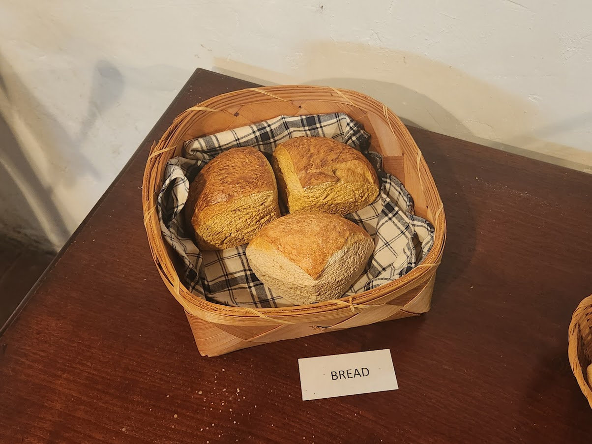
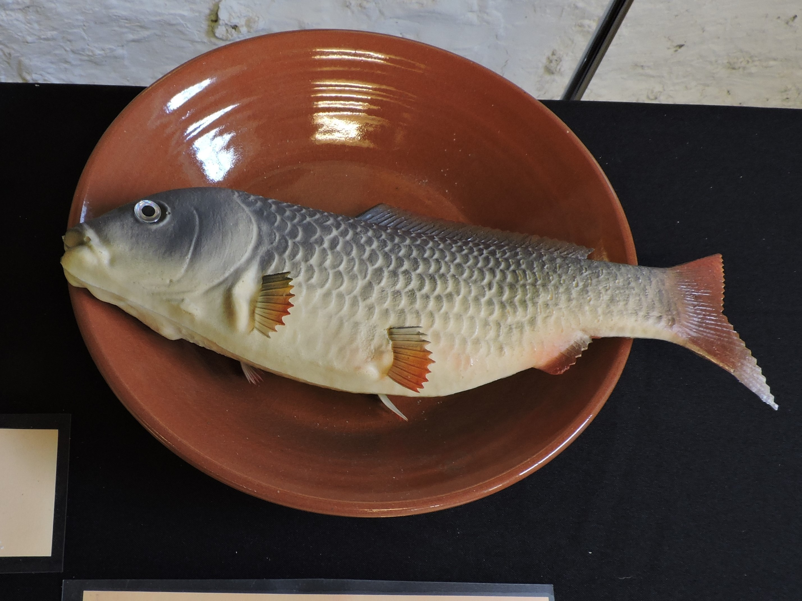
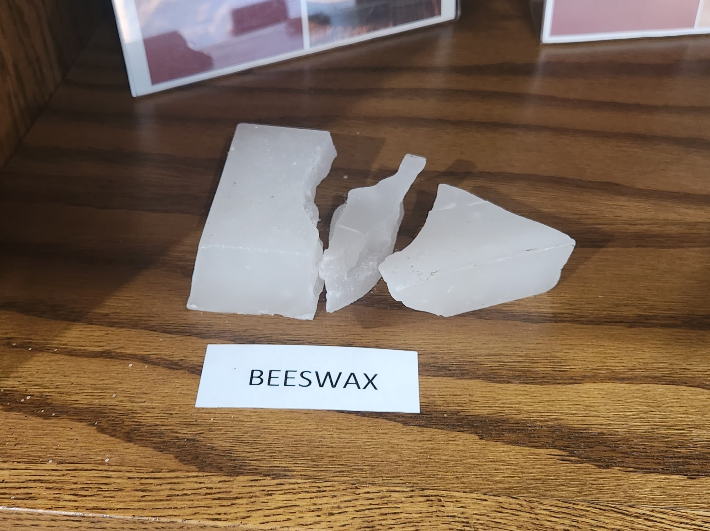
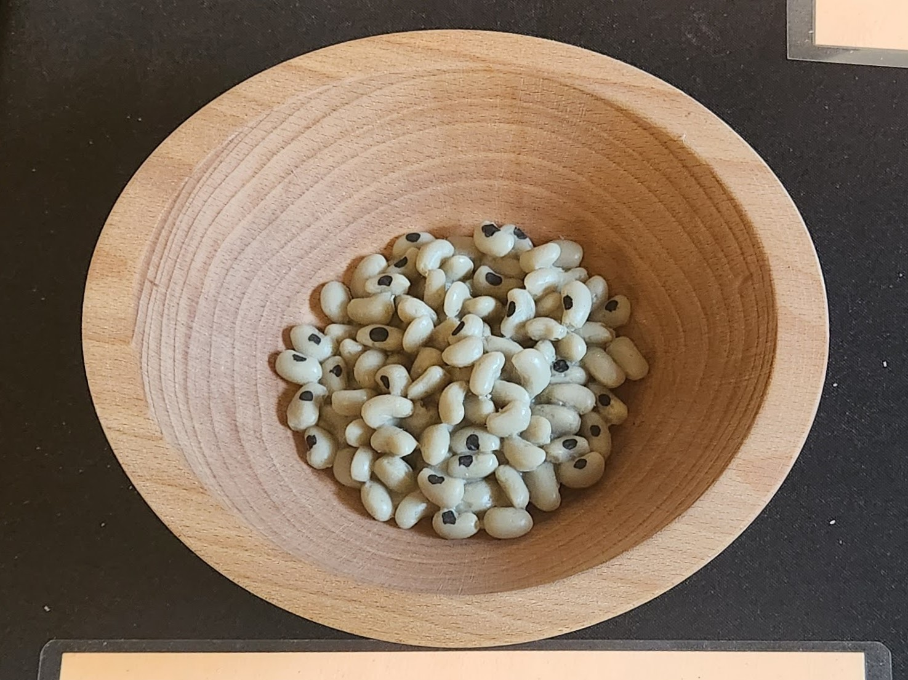
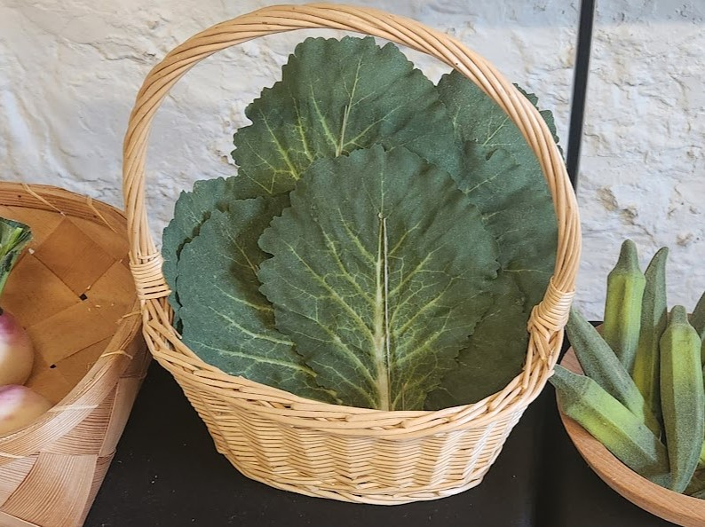

William Trent House
Bread
Fun fact: The Trents often ate Manchet bread, a favored kind of white bread similar to brioche.
Fish
Fun fact: Although slaves were forced to hunt for fish in the Delaware River to survive, the Trents were also known to eat seafoods such as fish, clams and oysters.
Beeswax
Fun fact: Beeswax was the preferred choice of wax for candles because it smelled the best when it was burned.
Black-Eyed Peas
Fun fact: Black Eyed Peas were brought to the colonies on slave ships from West Africa.
Greens
Fun fact: The enslaved people ate greens such as collard greens, kale, turnip greens, spinach, mustard greens, sorrel, cresses, or purslane.